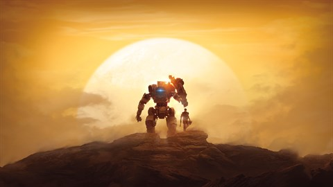

Titanfall 2
This is a video game unlike many I have played prior or since. You enter the role of Jack Cooper, a militia man for a rebel faction in the outer reaches of the solar system that is fighting for independence from a corporate overlord army bent on harvesting resources from the independent worlds and leaving them without the ability to survive. Training to be a titan pilot, you are thrust into the responsibility of picking up where your mentor left off when he is killed in the line of duty. Utilizing the brute force of a 40 ton walking tank and the speed and agility of the pilot-specific jump-kit Jack Cooper takes on the evil armada to save the planet and maybe help with the war.
